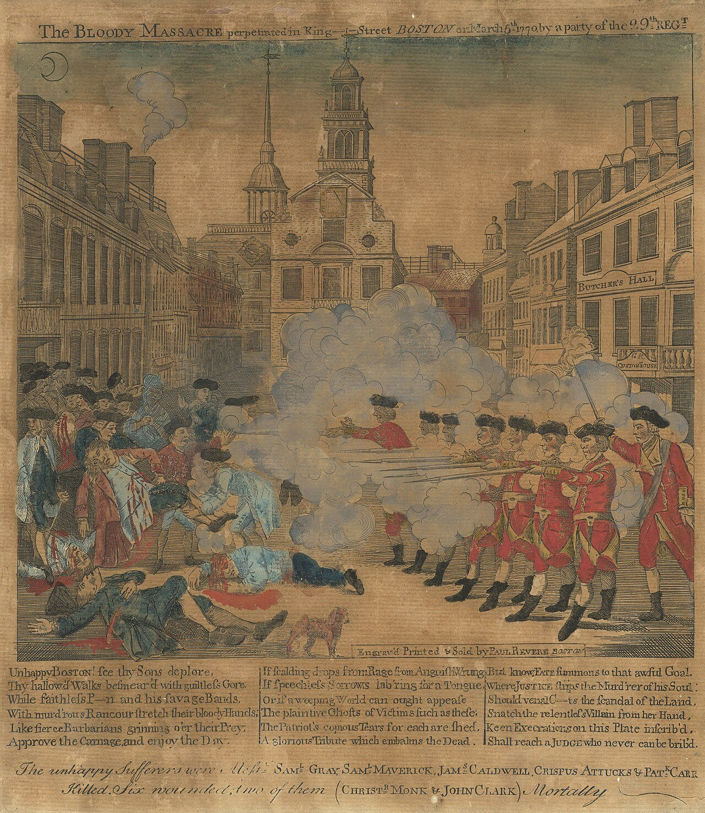

[9역01-01] 역사와 역사 탐구의 의미를 파악하고, 역사 학습의 목적을 다각도로 탐색한다.
오늘의 질문일어난 일은 모두 역사가 될까?
1역사의 두 가지 뜻
① 과거에 실제로 있었던 일 그 자체 → 사실로서의 역사
② 누군가 흔적(사료)을 골라 엮어 쓴 이야기 → 기록으로서의 역사
③ 우리가 교과서에서 만나는 역사는 ①과 ② 중 ② 이다. 까닭: 일어난 일 그 자체는 다시 볼 수 없고, 남은 자료를 골라 쓴 것이기 때문
2사료 읽기 · 『태종실록』 1404년 2월 8일
| 기사 | 임금이 몸소 활과 화살을 들고 말을 달려 노루를 쏘다가, 말이 거꾸러지는 바람에 떨어졌으나 다치지는 않았다. 좌우를 돌아보며 말하였다. “사관이 알게 하지 말라.” |
|---|
『태종실록』 7권, 태종 4년 2월 8일 기사를 현대어로 쉽게 옮김.
① 왕이 숨기고 싶었던 것은? 말에서 떨어진 일(체면이 깎이는 일)
② 사관이 왕의 이 말까지 적은 까닭을 짐작해 보자.
예시: 사관은 왕의 뜻보다 있었던 일을 그대로 남기는 것을 맡은 사람이다. 왕이 기록을 마음대로 고칠 수 있으면 실록을 믿을 수 없게 된다.
3나의 하루, 무엇이 남을까?
| 어제 나에게 일어난 일 | 100년 뒤에 남을까? (○/✕) | 남는다면 무엇으로? (글·사진·물건…) |
|---|
| | |
| | |
| | |
예시: 친구와 떡볶이를 먹음 — ✕(사진을 올렸다면 ○, 사진 파일) / 학교 체육 대회 — ○(학교 누리집 글, 상장).
사료: 『태종실록』(국가기록원 조선왕조실록 주제 자료 참고).
[9역01-01] 역사와 역사 탐구의 의미를 파악하고, 역사 학습의 목적을 다각도로 탐색한다.
오늘의 질문지나간 일을 왜 배울까?
1역사책의 이름
조선 성종 때(1485) 펴낸 역사책 『동국통감』, 중국 송의 『자치통감』에 들어간 ‘감(鑑)’은 거울이라는 뜻이다.
역사책을 거울에 빗댄 까닭은? 지난 일을 비추어 보며 잘한 일과 잘못한 일을 살피고 오늘을 바로잡으려고
2역사를 배우는 까닭 세 가지
| 나 | 내가 어디에서 왔는지 알기 — 내 생각: 예: 우리 집안, 동네, 나라가 걸어온 길을 알면 나를 설명할 수 있다. |
|---|
| 판단 | 비슷한 상황에서 어떻게 할지 생각하기 — 내 생각: 예: 옛 전염병 때 사람들이 겪은 일을 알면 오늘의 대처를 따져 볼 수 있다. |
|---|
| 남 | 다른 시대, 다른 사람의 처지 이해하기 — 내 생각: 예: 그때 사람들이 왜 그렇게 했는지 알면 쉽게 비웃거나 탓하지 않게 된다. |
|---|
셋 중 내가 가장 중요하게 여기는 것과 그 까닭:
3기억의 장소
독일은 수도 베를린 한가운데에 ‘학살된 유럽 유대인을 위한 기념비’(2005)를 세웠다. 자기 나라의 부끄러운 과거를 이렇게 기억하는 까닭은 무엇일까?
예시: 같은 잘못을 되풀이하지 않으려고, 피해자를 잊지 않으려고, 책임을 인정하고 이웃 나라의 신뢰를 얻으려고.
4나의 역사 질문과 한 문장
올해 역사 시간에 답을 찾고 싶은 질문:
역사를 배우는 까닭은 이다.
왜냐하면 .
[9역01-02] 다양한 자료와 사례를 통해 역사 탐구 방법을 익힌다.
오늘의 질문자료는 믿을 수 있을까?
1사료 나누기
| 자료 | 종류 (글·물건·그림·말) | 그 일이 일어난 때 만든 것? (그때 / 나중) |
|---|
| 『태종실록』의 1404년 기사 | 글 | 그때에 가까움(사초를 바탕으로 뒤에 편찬) |
| 생아슐의 주먹도끼 | 물건 | 그때 |
| 밴더린의 「콜럼버스의 상륙」(1840년대) | 그림 | 1492년 일에 대해서는 나중 |
| 할머니가 들려준 어린 시절 이야기 | 말 | 겪은 사람의 기억(그때의 일을 나중에 말함) |
2판화 한 장을 세 질문으로 읽기

판화 · 보스턴 학살(1770)
폴 리비어, 「보스턴 학살」(1770) · 미국 국립미술관 · CC0
| 누가 | 보스턴의 은세공인 폴 리비어(헨리 펠럼의 그림을 바탕으로) |
|---|
| 누구에게 | 영국의 지배에 불만을 품은 식민지 사람들에게 팔려고 |
|---|
| 사실·주장 | 사실: 영국군의 발포로 사람들이 죽었다. 주장: 군인들이 명령에 따라 줄 맞춰 쏘는 장면, ‘학살’이라는 제목 |
|---|
3자료끼리 맞대 보기
| 판화 | 영국군이 줄을 맞춰 서서 지휘관의 명령에 따라 가만히 서 있는 군중에게 한꺼번에 총을 쏜다. |
|---|
| 재판 | 군인 8명과 지휘관이 재판을 받았다. 군중이 위협했다는 증언 등이 받아들여져 대부분 무죄가 되었고, 2명만 가벼운 죄를 받았다. |
|---|
두 자료를 함께 보면 판화만 볼 때와 무엇이 달라지나? 그래도 판화가 쓸모 있는 까닭은?
예시: 판화는 사건을 한쪽 편에서 꾸며 보여 준다. 그러나 당시 식민지 사람들이 사건을 어떻게 느끼고 퍼뜨렸는지 보여 주는 사료로는 쓸모가 있다.
4한 문장 쓰기
자료를 믿으려면 해야 한다.
왜냐하면 .
보스턴 사건 재판: 지휘관 프레스턴 무죄, 군인 8명 중 6명 무죄, 2명 과실치사.